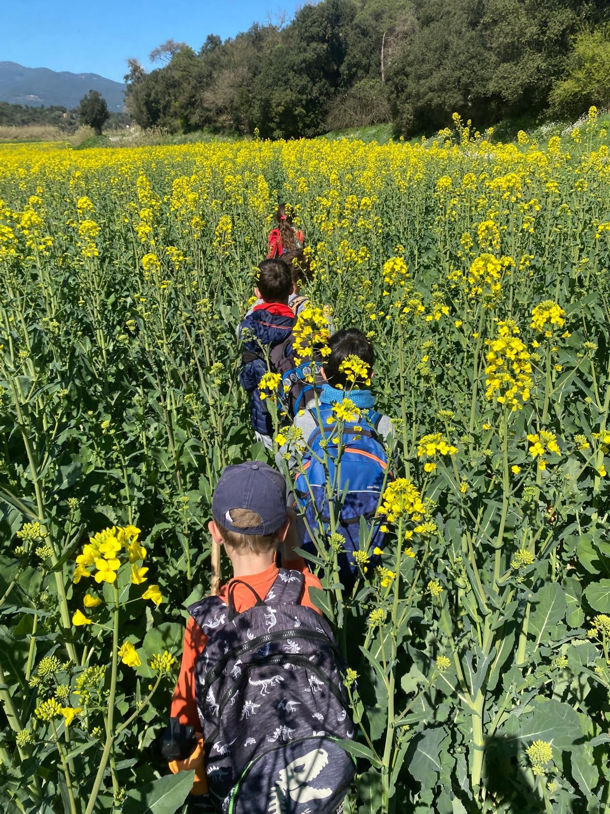
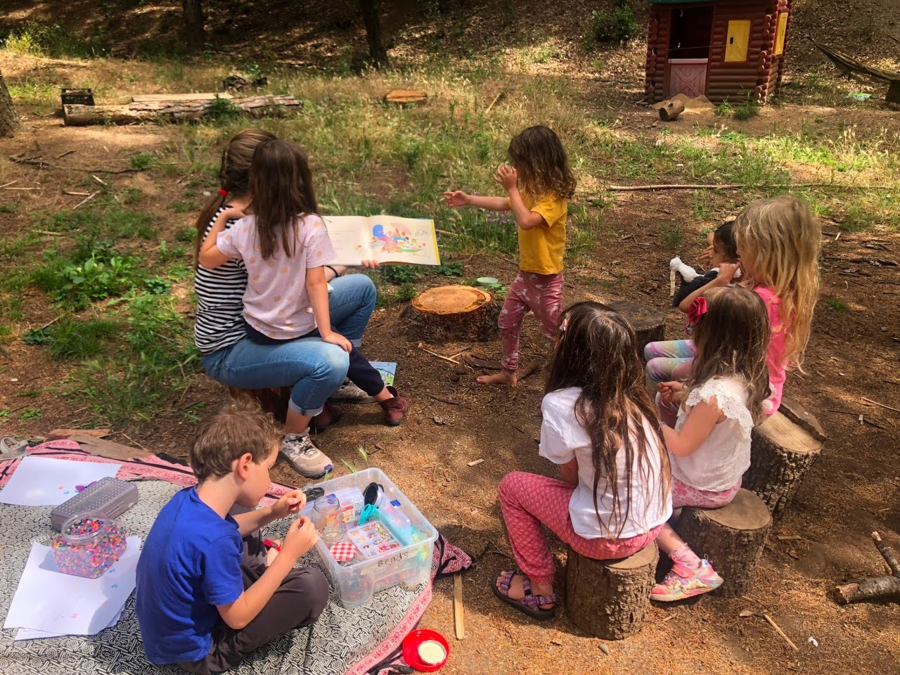
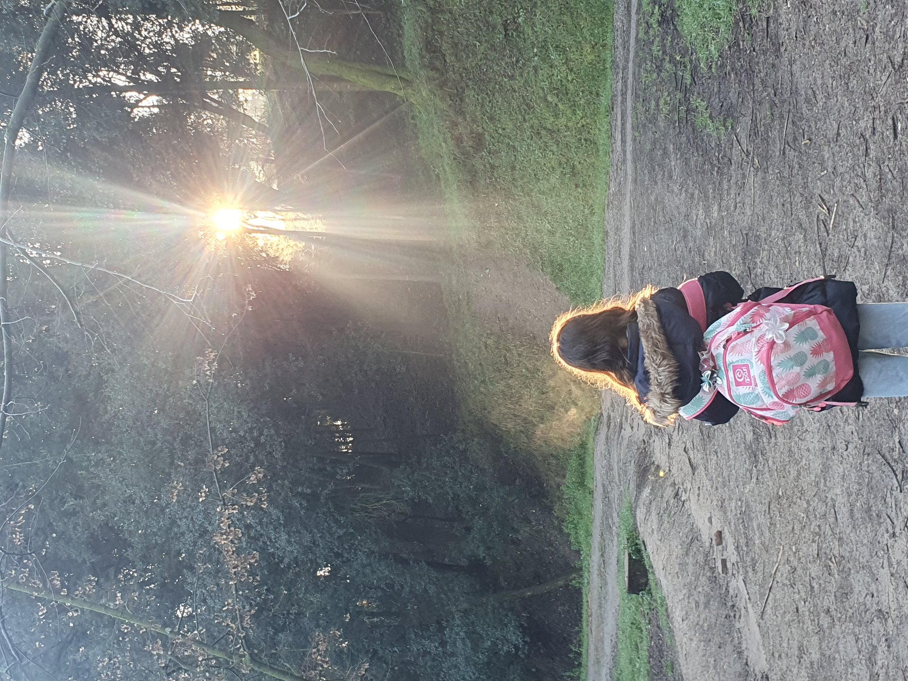
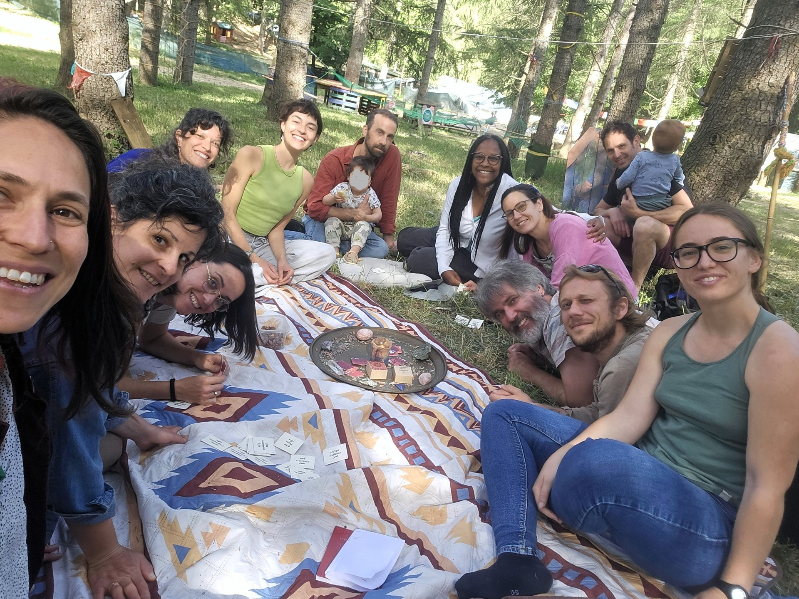

Escola forestal socioecològica · Llinars del Vallès
El bosc és la nostra aula, i el nen sencer la nostra matèria.
Una escola trilingüe basada en la natura, d'1 a 15 anys, a mitja hora de Barcelona, al peu de la Reserva de la Biosfera i Parc Natural del Montseny — on el rigor acadèmic creix al costat de les arrels, les ràtios i les relacions reals.
Per què existim
The Chestnut Tree
existeix per créixer
infants que entenen
— i tenen cura de —
el món
just fora
de la porta de l'aula.
Pedagogia Socioecològica
Ruta Sentinelles del Bosc — el nostre homenatge al Dr. Martí Boada Juncà
La nostra Pedagogia Socio-Eco s'arrela en l'obra i la influència del Dr. Martí Boada Juncà — un dels científics ambientals, naturalistes i educadors més reconeguts de Catalunya, profundament connectat amb el massís del Montseny, la Reserva de la Biosfera de la UNESCO on viu la nostra escola. Ha estat mentor dels nostres fundadors des de 2022. En el seu honor, el nostre campus al Baix Montseny acull la Ruta Sentinelles del Bosc, un itinerari interpretatiu amb quatre estacions d'aprenentatge: dendrocronologia, edafologia, transsecte i herbari, i topofília.
Descobreix la Ruta Sentinelles del Bosc →
Petita per disseny
Una ràtio d'1:8, perquè l'ensenyament sigui personal
Amb un mestre per cada vuit infants, el nostre equip ensenya a l'infant que té al davant, no a un currículum pensat per a la mitjana. La majoria de classes són a l'aire lliure, en totes les estacions, on les preguntes sorgeixen del món mateix i no d'una fitxa.
Coneix l'equip →
Rigor, redefinit
Creixent per etapes, com el mateix castanyer
De Pre-Kindergarten fins a Secundària (ESO), cada etapa manté les mateixes arrels — aprenentatge a l'aire lliure, grups reduïts, pedagogia socioecològica — mentre el nucli acadèmic en llengua, matemàtiques i ciències s'aprofundeix any rere any.
Consulta el currículum per etapa →
Una comunitat, no només una escola
Construïda per famílies, mestres i voluntaris junts
Des dels matins de portes obertes fins al nostre programa internacional de voluntariat, The Chestnut Tree es forma tant per les persones que hi participen com per la pedagogia que hi ha darrere.
Descobreix com participar-hi →
Cada família que ens visita ho veu en els primers deu minuts — els infants no esperen l'esbarjo, ja són a fora, ja estan aprenent.
Equip docent
The Chestnut Tree - El Castanyer
Una setmana tipus
Matèries clau, ensenyades on realment passen
A l'aire lliure
Ecologia Forestal
Llegint el territori: sòl, estacions, espècies i conservació.
Pràctic
Horticultura i Cuina
De la llavor al plat, amb les matemàtiques i la biologia integrades.
Expressió
Teatre, Art i Música
Confiança i veu pròpia, assajades davant de públic real.
Benestar
Ioga i Intel·ligència Emocional
Anomenar sentiments, resoldre conflictes i autoregulació com a habilitat ensenyada.
Explora més
Dues maneres més de conèixer The Chestnut Tree

Vine a conèixer-nos
Visita'ns, concerta una trobada
Ens encantaria conèixer-te — vine a veure l'escola, recorre el campus i resol totes les teves preguntes en persona.